High Precision Controls
Tight process control and inspection discipline ensuring consistent dimensional accuracy for critical automotive assemblies.
PrimeTec Automotive Parts Pvt. Ltd. manufactures high-precision automotive components for Tier-1 suppliers and OEMs — driven by an uncompromising commitment to zero defects (0 PPM campaign), habitual 3C 5S discipline, and continuous process quality automation.

Primetec Automotive Parts Private Limited was established in the year 2019 by Mr. Venkatesan, Managing Director.
Our 5.5 Acre plant with 48,000 sq. ft. built-in area is located at Sengadu Road, Sriperumbudur, Kanchipuram - 602002, which is 40 Kms away from Chennai, Tamil Nadu, India.
Our group of companies specializes in manufacturing automotive components for Tier-1 companies and OEMs and has been serving clients with utmost satisfaction for over 16 years. Our company has established a strong hold in this industry because we believe customer satisfaction and continuous improvement is the only path for growth.
Explore live video presentations of PrimeTec Automotive Parts Pvt. Ltd. and PrimeTec Industries.
Sriperumbudur Main Manufacturing Plant & Precision Operations
SIDCO Industrial Estate, Korattur Branch Facility
The strengths that define our component manufacturing and long-term customer satisfaction.
Tight process control and inspection discipline ensuring consistent dimensional accuracy for critical automotive assemblies.
We are fully committed to the "0 PPM" campaign to become No.1 in Quality and Product through effective QA systems.
Habitual 3C and 5S workplace organization, continuous layout improvements, and standardized shop-floor practices.
Implementing process and inspection automation for consistent process quality and higher shop-floor productivity.
Vision to be graded as a Tier-1 supplier to all OEMs, supporting brand image and cost competitiveness.
Serving automotive Tier-1s and OEMs with utmost satisfaction for over 16 years across group companies.
High-precision measuring instruments in our QC Laboratory supporting GD&T verification and quality assurance.
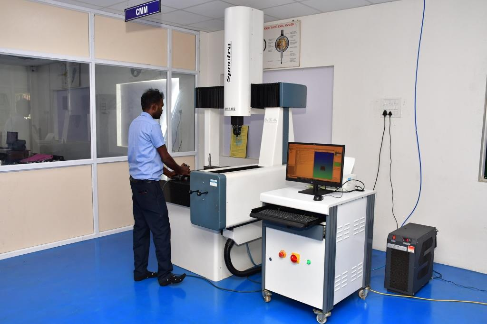
Measures the height, width, and depth of parts using coordinate processing technology. Automatically measures targets, records measured data, and verifies GD&T parameters to ensure dimensional accuracy.
View Technical Specs →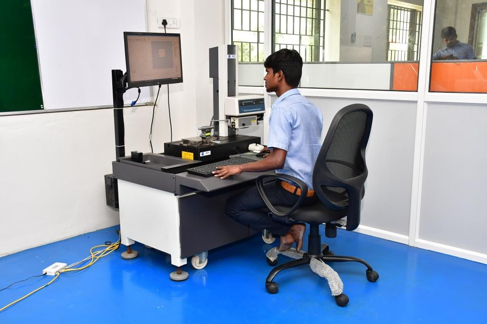
Generates a 3D surface map by traversing a sensitive stylus across the surface according to distance. Glass scale and reading head ensure precision measurements irrespective of wear, dirt, or slippage.
View Technical Specs →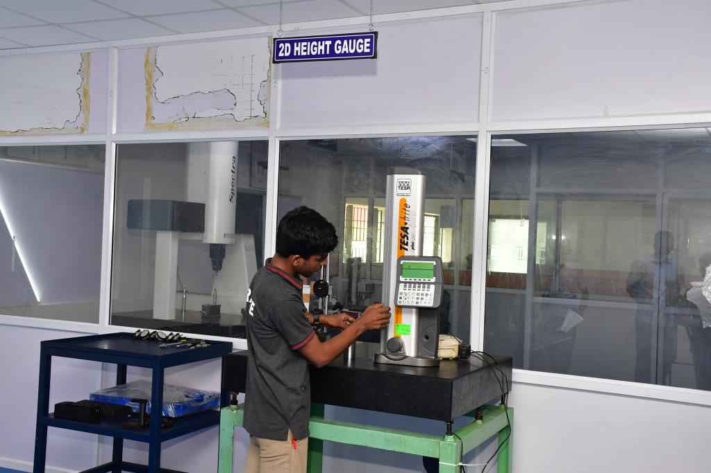
Offers expanded measuring possibilities in 2 coordinates with high user comfort. Enables efficient programming of measurement sequences for in-process inspection.
View Technical Specs →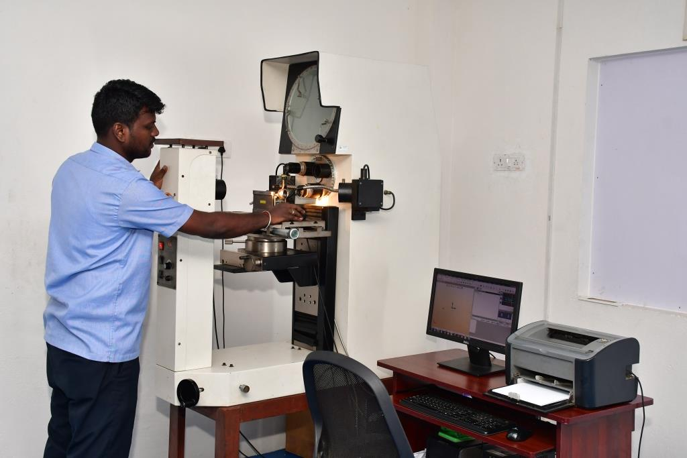
Optical profile inspection system widely used in precision machinery manufacturing for optical contour, profile, and edge verification.
View Technical Specs →Precision automotive parts manufactured by PrimeTec for steering, suspension, brake, transmission, and drivetrain applications.
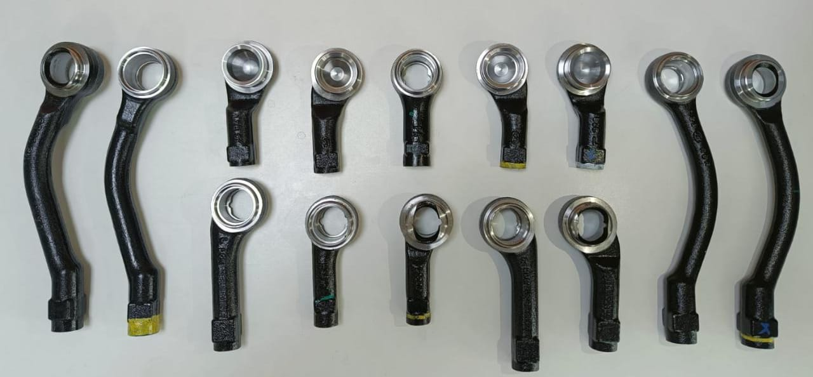
Elementary part of a steering mechanism transferring routing from the steering linkage to steering knuckle via tie rod arm. Directly crucial for driving safety.
View Product Details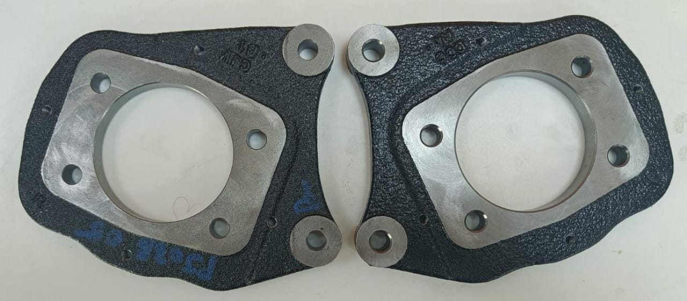
Vehicle brake sheet metal body with center opening receiving axle housing and non-parallel mounting holes securing vehicle brake to torque plate.
View Product Details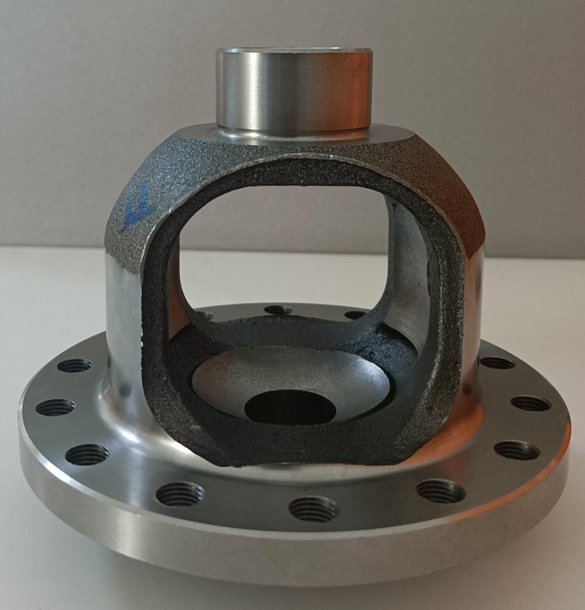
Machined differential gear case sitting between front or rear vehicle axles, dividing engine power between axles to drive each wheel smoothly.
View Product Details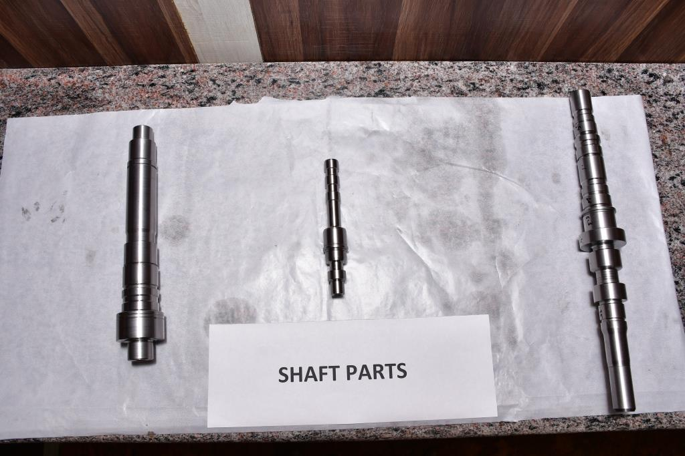
Precision transmission output shaft manufactured to transmit power from prime mover to driven vehicle units or operational components.
View Product Details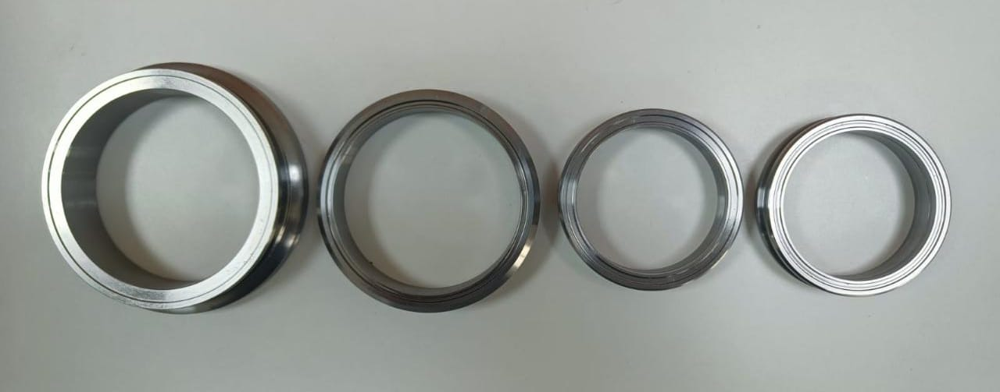
Transmission component enabling meshing gears to be changed on moving vehicles without negative consequences for gear integrity or interior noise.
View Product DetailsTailored component manufacturing programs for Tier-1 suppliers and OEMs, aligned with your specific engineering drawings and quality targets.
Request Custom ProgramWe are fully committed to campaign "0 PPM" to become No.1 in Quality and Product. We fully understand supply of good quality parts determines our future.
“To be a developed automotive industry graded as Tier 1 Supplier to all OEM.” We fully recognize, “only superior parts quality is the key for survival.”
We shall fully support to achieve Brand Image and Cost competitiveness through continuous improvements. We shall dedicate our efforts to “0 PPM” through unified team spirit and enthusiastic driving force.
A 5.5-acre campus with 48,000 sq.ft. built-up manufacturing space in Sriperumbudur, Tamil Nadu.
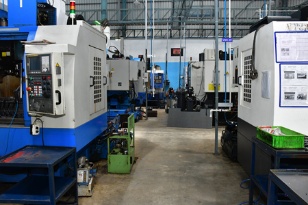

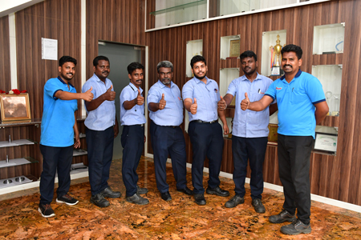
Industry awards received for supply quality, vendor performance, 100 PPM achievements, and social contributions.
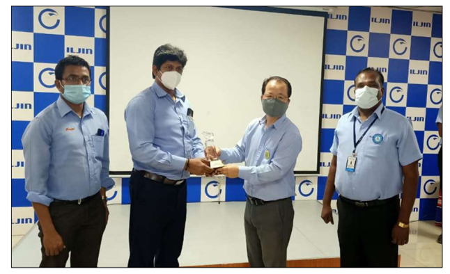
Supplier excellence and SGA recognition awarded for outstanding manufacturing quality and partnership.
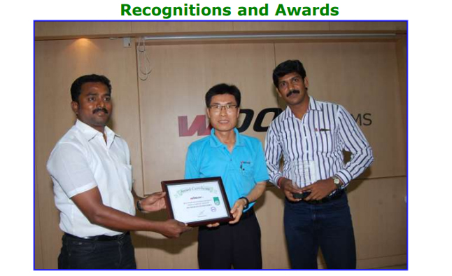
M/s Woosu India received the “Best Vendor for Outstanding Performance Award” from Iljin during ’13.
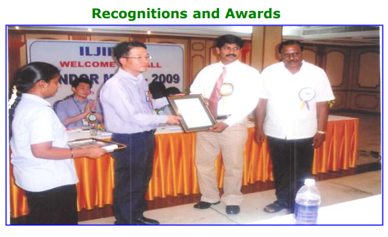
M/s Iljin Automotive Pvt. Ltd. awarded the 100 PPM Award during ’09 in recognition of quality excellence.
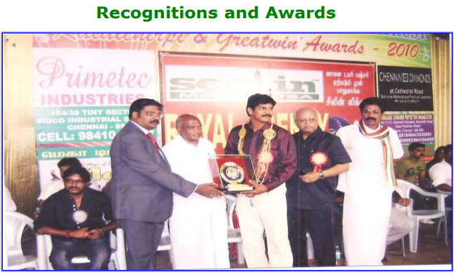
Proprietor Mr. S. Venkatesan along with Hon’ble Minister Mr. Ubayadullah for Excellency in Automobile.
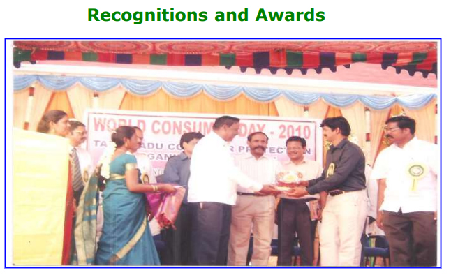
Received Consumer Award from Tamilnadu Consumer Protection Organization for Best Social Contribution.
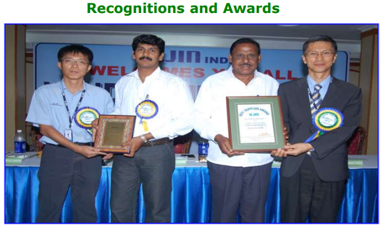
Supplier performance and quality compliance recognition documented in company archives.
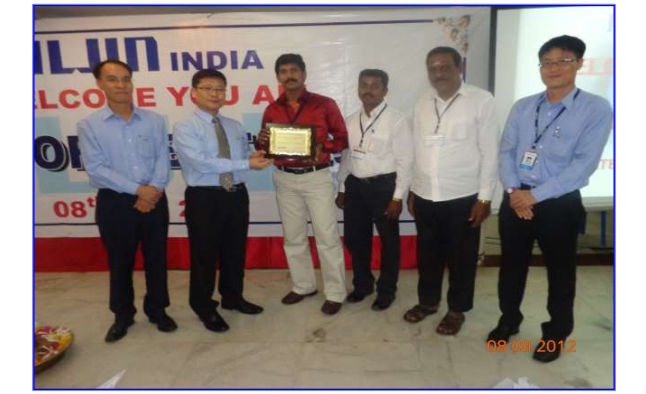
Performance excellence award for consistent delivery and component quality.
Serving Tier-1 companies, OEM programs, Woosu India, and Iljin Automotive with top satisfaction.
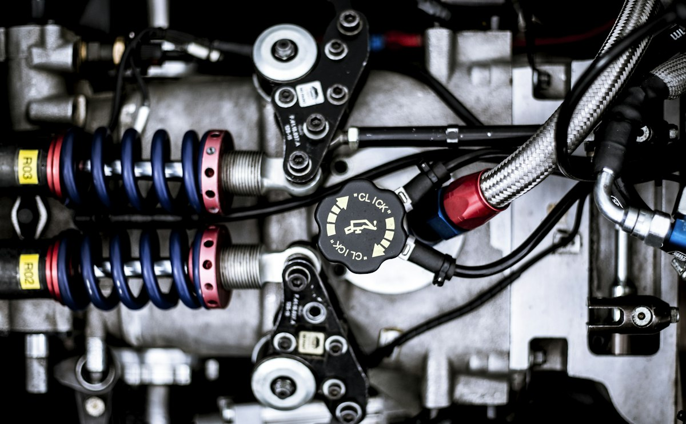
Machine Shop
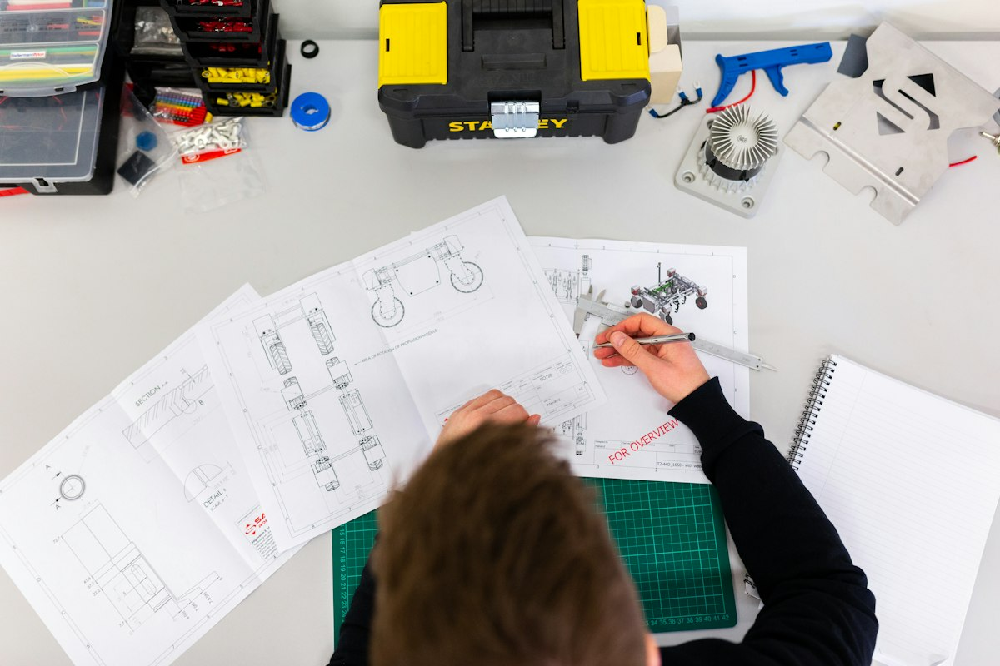
No. 251/1A & 2A, Sengadu Road, Sriperumbudur, Kanchipuram - 602002, Tamil Nadu, India.
Email: venkatesan@primetecappl.com
Phone: +91 98410 87087
Helplines: +91 72999 92929 | 91500 54239 | 91500 54238
No. 164/1A & 39, Tiny Sector, SIDCO Industrial Estate, Korattur, Chennai, Tamil Nadu, India.
Email: venkatesan@primetecappl.com | npd@primetecappl.com
Phone: +91 98410 87087 | +91 72999 64275